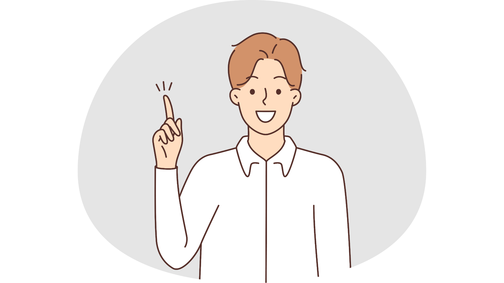
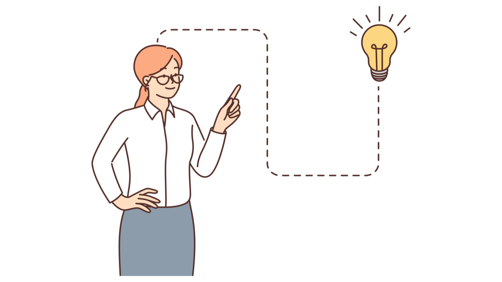
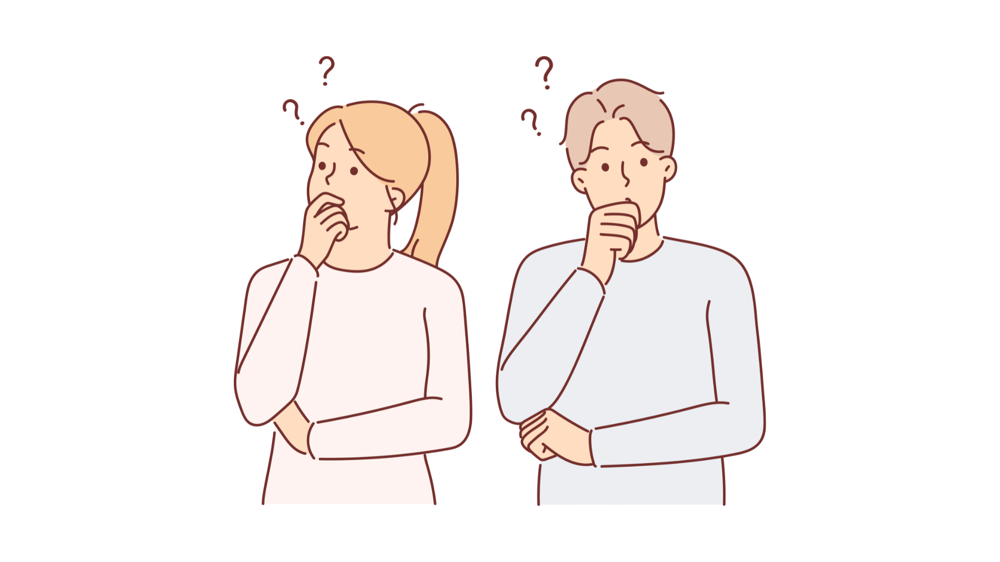
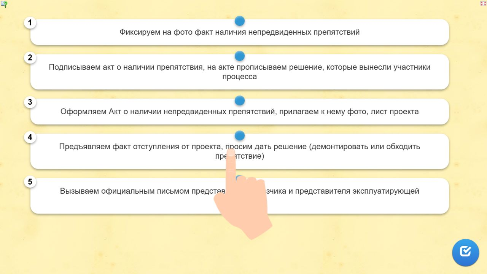
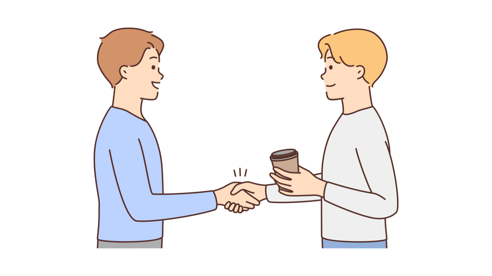
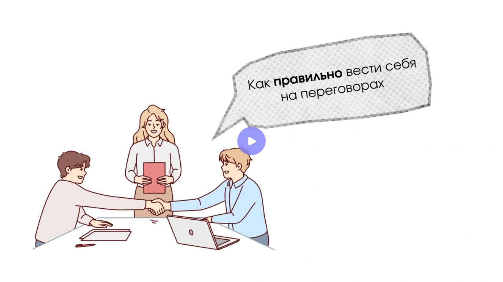
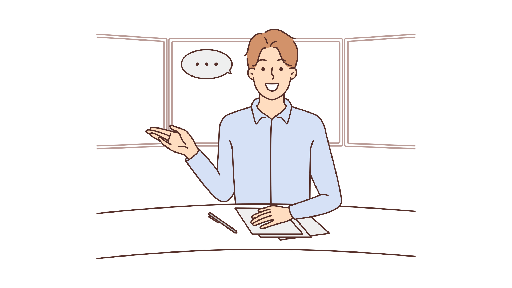
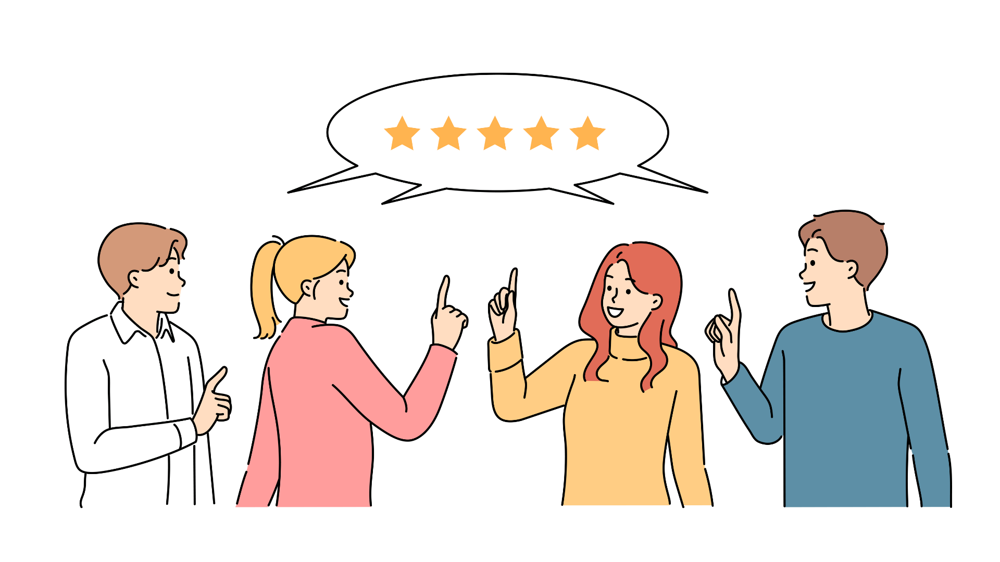

Коммуникативные навыки в строительстве: быстрокурс для ИТРЛокальный архив курса
МИКРОКУРСЫ. 2026 · Коммуникативные навыки в строительстве
Как коммуникация помогает ИТР в работе
Вера СафуановаЭксперт строительного контроля с опытом работы в строительной сфере более 15 лет
В строительстве фундамент держит дом, а умение коммуницировать — проект: без точных слов и правильных переговоров даже самый крепкий план рухнет при первом отступлении.
Фраза опытного инженера-строителя
Один из ключевых навыков, который помогает инженеру в повседневной работе – это коммуникация. На уроке разберем, как этот навык изменит к лучшему вашу работу, а также потренируемся его применять.
Как навык поможет инженеру в работе
Умение правильно коммуницировать дает инженеру-строителю следующие результаты:
Точное выполнение поставленных задач
Задачи, которые поставлены общими фразами, не приносят необходимых результатов. Каждый понимает слова по-своему, каким бы опытным он не был. Поэтому при постановке задачи необходимо точно следовать алгоритму. Смотрите ниже в памятке алгоритм точного выполнения поставленных задач. Рекомендуем скачать памятку, чтобы она всегда была у вас под рукой.
Сформулируйте задачу. Она может звучать как «Оформи исполнительную документацию на этот месяц» или «Оформи исполнительную документацию, объем работ определите с прорабом сегодня, проверь наличие комплекта паспортов и наличие записей в ОЖР. Исполнительные схемы у геодезистов готовы»
Поставьте точную цель. Вместо того, чтобы поставить цель в виде «срок до конца месяца», укажите точную дату и проговорите все нюансы конечной цели. Также можете уточнить результат.
Получите обратную связь. Уточните у сотрудника, как он понял цель и задачу. Также можете уточнить как он ее будет выполнять.
Проверьте ход работы. Любую задачу можно разделить на этапы: обсудите, на каких «контрольных точках» необходимо контролировать выполнение задачи.
Проверьте конечный результат. Если цель и задачи были поставлены правильно, то в большинстве случаев вы получите необходимый результат вовремя. Но если так не произошло, уточните, что именно помешало выполнить задачу, на каком этапе возникли сложности, и обратите внимание сотрудника, что если происходят какие-либо срывы в сроках, то он может попросить у вас помощи или совета, чтобы такой ситуации больше не происходило.

Источник и ограничения. Статическое содержание не проверяет ответы и не воспроизводит анимацию.
Теперь перейдем к практике. Ниже представлены два кейса, по которым вам необходимо определить, как правильно поставить задачу, чтобы она была выполнена.
Кейс 1
Карточки для самопроверки
Исходные карточки для самопроверки. Локальная страница не оценивает ответы.
1. Сотруднику необходимо подписать ИД в бумажном виде у всех участников строительства. Как правильно поставить задачу, чтобы он была выполнена?
«Подпиши ИД сегодня»
«Подпиши ИД до конца недели"
«Подпиши ИД у всех до конца недели»
«Необходимо подписать ИД до этой пятницы. Сначала подпиши у внутренних сотрудников, потом у Заказчика»
Ответ, отмеченный в данных источника
«Необходимо подписать ИД до этой пятницы. Сначала подпиши у внутренних сотрудников, потом у Заказчика»
Источник и ограничения. Статическое содержание не проверяет ответы и не воспроизводит анимацию.
Кейс 2
Карточки для самопроверки
Исходные карточки для самопроверки. Локальная страница не оценивает ответы.
1. Сотруднику необходимо подписать ИД в бумажном виде у всех участников строительства. Какие контрольные точки можно поставить для этой задачи?
Проверяем, как сотрудник подписал всю документацию в пятницу
Проверяем, как сотрудник передал документацию Заказчику
Проверяем, как сотрудник подписал документацию у внутренних участников строительства
Проверяем, как сотрудник оформил лист передачи ИД для подписания у Заказчика
Проверяем, что ИД передана Заказчику на подпись
Проверяем, что сотрудник контролирует и не упускает процесс подписания ИД у Заказчика
Самостоятельно звоним Заказчику и уточняем, что он подписывает ИД
Ответ, отмеченный в данных источника
Проверяем, как сотрудник подписал документацию у внутренних участников строительства; Проверяем, как сотрудник оформил лист передачи ИД для подписания у Заказчика; Проверяем, что ИД передана Заказчику на подпись; Проверяем, что сотрудник контролирует и не упускает процесс подписания ИД у Заказчика

Источник и ограничения. Статическое содержание не проверяет ответы и не воспроизводит анимацию.
Эффективное согласование изменений и отступлений от проекта
Отступление от проекта случается практически на каждом строительном объекте. Для того, чтобы его согласовать, можно также использовать методы коммуникации. Смотрите их в памятке ниже.
Алгоритм действий для эффективного согласования и отступлений от проекта:
Алгоритм действий для эффективного согласования и отступлений от проекта:
Определите точный порядок согласования. Выясните, кто участвует в процессе, и расставьте приоритеты по подписям.
Подготовьте необходимые документы: паспорта, исполнительные схемы, журналы и т.д.
Организуйте вызов ответственных лиц на объект для объяснения причин изменений.
Представьте полный пакет документов при предъявлении изменений.
Соберите подписи всех участников, вовлеченных в согласование.
Если кто-то отказался подписать, узнайте причину, требуемые действия и уточните дату возможного подписания при наличии подтверждающих документов.

Источник и ограничения. Статическое содержание не проверяет ответы и не воспроизводит анимацию.
Отлично. Давайте сразу потренируемся. Ниже я описала обычную рабочую ситуацию инженера-строителя. Ваша задача - расставить правильный порядок действий.
Упражнение LearningApps
Сохранённый вид упражнения. Перетаскивание и проверка результата требуют LearningApps.

Доступный текст упражнения
3
Оформляем Акт о наличии непредвиденных препятствий, прилагаем к нему фото, лист проекта
1
Фиксируем на фото факт наличия непредвиденных препятствий
5
Вызываем официальным письмом представителя Заказчика и представителя эксплуатирующей организации
4
Предъявляем факт отступления от проекта, просим дать решение (демонтировать или обходить препятствие)
2
Подписываем акт о наличии препятствия, на акте прописываем решение, которые вынесли участники процесса
Задание
На объекте по прокладке подземных коммуникаций обнаружена бетонная плита, которая мешает проложить необходимую линию точно по оси. Расставьте порядок действий в данном случае.
OK
Источник и ограничения. Статическое содержание не проверяет ответы и не воспроизводит анимацию.
Грамотное ведение переговоров и решение спорных ситуаций
У многих переговоры вызывают негативные эмоции. Но они встречаются нам не только в профессиональной, но и повседневной жизни. Смотрите ниже в памятке алгоритм успешного проведения переговоров.
Подготовка.Заранее поставьте цель переговоров, изучите позицию оппонента, представьте его точку зрения и продумайте несколько вариантов решения, которые вас устроят.
Переговоры.Начинайте разговор с позитивного тона, не переходя в "нападение". Помните: перед вами не враг, а человек, от которого зависит важное решение.Для установления контакта используйте комплименты или отмечайте интересные детали, например: «У вас так много наград, вы целеустремлённый человек». Это помогает создать позитивное настроение.Чётко обозначьте свою позицию и задавайте вопросы для уточнения мотивов оппонента – слово «почему» станет вашим помощником. Отвечайте на возражения с пониманием, например: «Я понимаю вашу позицию, но…»
Завершение.Подведите итог переговоров, подтвердите обоюдное согласие, поблагодарите собеседника за уделённое время и вклад в процесс.
Анализ.После переговоров оцените результат. Решите, что прошло хорошо, а что можно улучшить.

Источник и ограничения. Статическое содержание не проверяет ответы и не воспроизводит анимацию.
Важно помнить: для сложных вопросов часто требуется около семи переговоров, прежде чем будет достигнуто окончательное согласие.
Если вы видите, что ваш оппонент не в настроении начать переговоры, поблагодарите его за назначенную встречу, подтвердите вашу заинтересованность в решении вопроса и предложите отложить процесс переговоров.
Приступим к последнему практическому заданию этого урока. Оно состоит из трех кейсов: начало, середина и окончание переговоров. Чтобы успешно выполнить упражнения, посмотрите короткий видеоролик о том, как правильно вести себя во время переговоров.
Видеоролик
Потоковое видео доступно на исходном сервисе. Файл и стенограмма не предоставлены штатным способом.

Источник и ограничения. Статическое содержание не проверяет ответы и не воспроизводит анимацию.
Кейс 1. Начало переговоров
Карточки для самопроверки
Исходные карточки для самопроверки. Локальная страница не оценивает ответы.
1. Начинаются переговоры. С какой фразы стоит их начать?
Здравствуйте, я Иван – менеджер проекта.
Добрый день. Меня зовут Иван, я – менеджер проекта.
Доброго дня. Меня зовут Иван, я – менеджер проекта «Девелопмент». Благодарю Вас за то, что уделили мне время.
Ответ, отмеченный в данных источника
Доброго дня. Меня зовут Иван, я – менеджер проекта «Девелопмент». Благодарю Вас за то, что уделили мне время.
Источник и ограничения. Статическое содержание не проверяет ответы и не воспроизводит анимацию.
Кейс 2. Середина переговоров
Карточки для самопроверки
Исходные карточки для самопроверки. Локальная страница не оценивает ответы.
1. Оппонент начинает переключать Вас на другую тему. Как вернуть переговоры в нужное русло?
Простите, но мы не о том говорим сейчас.
Давайте вернемся к нужной теме.
Поддержать разговор, а затем ответить: «Петр Петрович, это интересное наблюдение, а что вы думаете о… (направление, о котором вы изначально говорили)"
Ответ, отмеченный в данных источника
Поддержать разговор, а затем ответить: «Петр Петрович, это интересное наблюдение, а что вы думаете о… (направление, о котором вы изначально говорили)"

Источник и ограничения. Статическое содержание не проверяет ответы и не воспроизводит анимацию.
Кейс 3. Окончание переговоров
Карточки для самопроверки
Исходные карточки для самопроверки. Локальная страница не оценивает ответы.
1. Переговоры заканчиваются. Как поступить, уходя из кабинета?
Спасибо. До Свидания.
Благодарю, что уделили мне время. Надеюсь на продолжение нашего сотрудничества.
Спасибо, что уделили мне время.
Ответ, отмеченный в данных источника
Благодарю, что уделили мне время. Надеюсь на продолжение нашего сотрудничества.

Источник и ограничения. Статическое содержание не проверяет ответы и не воспроизводит анимацию.
Прекрасно! В следующем уроке мы с вами будем развивать креативные навыки. Они помогут вам в решении форс-мажорных ситуаций, а также снизят риск простоев на объекте.